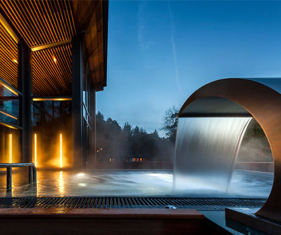

Blog Post: Luxury Spas in the Lake District

Written for Lakelovers and posted on A Luxury Travel Blog this piece of work encapsulates what we love doing best - bringing together words and images.
Producing engaging content is such a pleasure when you have great material to work with and an exciting topic to discuss.
Thanks to Brimstone Spa, Low Wood Bay Spa, Appleby Manor hotel and Garden Spa, Gilpin Lake House Jetty Spa and Spa Lodges and Armathwaite Hall Country House & Spa for all your help and guidance in putting this blog post together.
We'd love to come and see you again soon.
Love Phiz Digital X